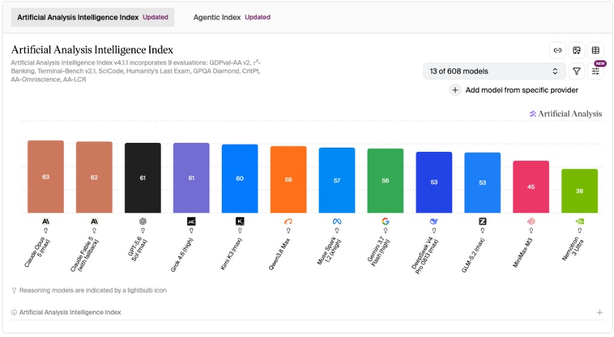
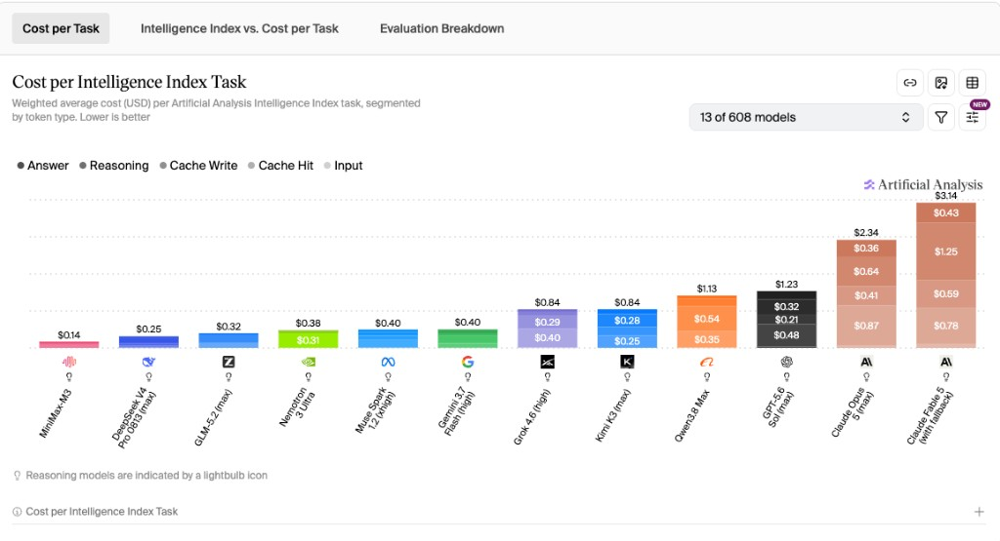

Cheap Intelligence, Expensive Trust: DeepSeek, GLM & Kimi vs Claude and OpenAI
For most of 2024, “frontier AI” was a short list. If you wanted the best reasoning, coding, or agent behavior, you paid OpenAI or Anthropic—and you accepted closed weights, premium prices, and a product surface that felt like the only adult option in the room.
Eighteen months later, that monopoly of taste is gone. What remains is a sharper split: Chinese labs— DeepSeek, Zhipu / Z.ai (GLM), and Moonshot / Kimi—have made near-frontier intelligence cheap, open, and fast to iterate. US labs still usually win the absolute tip of public intelligence indexes, and they still dominate agentic productization, enterprise procurement, and regulatory comfort.
The story is no longer “China is catching up on IQ tests.” Catching up implies one finish line. What we actually have is a bifurcation: commoditized cognition on one side, trusted agency on the other. Buyers are already routing between them.
Why this matters now
By mid-2026, three things collided.
First, open (or near-open) weights became China’s default competitive weapon—DeepSeek and GLM under MIT-style terms; Kimi K2 under Modified MIT; K3 under a Kimi K3 License. That is not a cultural flourish. It is a go-to-market: download, fine-tune, self-host, put an agent behind your firewall.
Second, price stopped being a temporary promo and became strategy—then showed signs of discipline. DeepSeek’s API pricing (including peak/off-peak structure around 16 August 2026) still undercuts typical Claude/GPT frontier rates by a wide margin. Cost-per-task on composite evaluations is where the gap feels visceral, not academic.
Third, reasoning and agents became the product, not chat demos. Claude Code, ChatGPT’s tool surface, and Chinese coding/agent SKUs all point to the same buyer question: which model do I default to when intelligence is abundant and the bottleneck is reliability, context, or bill size?
Capital noticed. DeepSeek’s reported valuation around $52B mid-2026 (Caixin reporting; treat as a secondary market signal, not audited fundamentals) and Z.ai’s Hong Kong IPO in January 2026 put Chinese model labs into the same conversation as Western closed labs—while US Entity List pressure (Zhipu, January 2025) and regulatory overhang around DeepSeek remind everyone that geopolitics is part of the stack.
The old assumption: US labs were far ahead
The old mental model was linear: US labs invent the frontier; everyone else trails by a generation; open models are for hobbyists; price follows prestige.
That assumption mixed three different races into one slogan:
- Benchmark intelligence — can the model solve hard tasks?
- Productized agency — can it run tools, IDEs, and workflows without babysitting?
- Enterprise trust — procurement, SLAs, safety posture, legal comfort
Through early 2025, OpenAI and Anthropic really did lead on (2) and (3), and usually on (1) as well. OpenAI’s o-series made “think longer” mainstream; GPT-5 (7 August 2025) folded reasoning, coding, and tools into one product era. Anthropic’s Claude 4 (22 May 2025) and Claude Code turned “coding model” into something you could run as a terminal agent.
The lead was real. It was also not a single number—which is why treating any one chart as a permanent ranking is a category error.
What changed with DeepSeek, GLM, and Kimi
From late 2024 through mid-2026, Chinese labs repeatedly shipped frontier-class Mixture-of-Experts (MoE) models that matched or approached US closed models on many public benchmarks at a fraction of API cost:
- DeepSeek — V3 (Dec 2024) → R1 (Jan 2025) → V4 Flash/Pro (Aug 2026)
- Zhipu GLM — GLM-4.5 (Jul 2025) → GLM-5.x (2026)
- Moonshot Kimi — K2 (Jul 2025) → K3 (Jul 2026)
This was not one China, one strategy. DeepSeek leaned into extreme price/performance and MoE efficiency. Zhipu leaned into open weights, agentic tooling, and a capital-markets path—while carrying Entity List friction. Moonshot leaned into long context, coding agents, and multimodal flagships.
And the multiplayer field is wider than these three: Alibaba’s Qwen and MiniMax matter in the same ecosystem. Treating “Chinese AI” as a monolith is how analysts miss the actual competition.
Kill the other cliché while we’re here: DeepSeek-V3’s paper reports a final training run cost of about $5.576M at an assumed $2/H800-hour (arXiv:2412.19437). That figure excludes prior R&D, ablations, failed runs, and data work. The viral “$6M frontier model” myth collapses a research accounting note into a fairy tale about free lunches.
DeepSeek analysis
DeepSeek made the efficiency argument impossible to ignore.
DeepSeek-V3 (December 2024) was a MoE design: roughly 671B total parameters, about 37B active per token. Sparse activation is the engineering joke that became a business model—huge capacity, selective spend at inference. DeepSeek-R1 (January 2025) pushed reinforcement-learning-style reasoning into open weights (GitHub: DeepSeek-R1). By August 2026, V4 Flash / Pro pushed long context (reported 1M context class) and thinking modes into API SKUs.
Pricing as product. As of mid-August 2026, DeepSeek’s public docs showed Flash around $0.14 / $0.28 and Pro around $0.435 / $0.87 (input/output per million tokens; check DeepSeek pricing—rates move). Peak rates rose after ~16 August 2026; that matters because list price ≠ cost-per-task, and peak/off-peak discipline is how ultra-cheap APIs stop being a race to the bottom.
Strengths (analysis): intelligence-per-dollar; developer-friendly OpenAI-compatible endpoints; fast iteration that keeps pressure on everyone else’s “value tier.”
Limits (analysis): Artificial Analysis’s composite Intelligence Index still usually puts tip Claude/GPT variants ahead on absolute score; regulatory and procurement overhang is real for many Western buyers; open weights are not free to run when checkpoints are multi-terabyte.
DeepSeek’s strategic message is blunt: if your workload is high-volume cognition, paying a trust premium on every token is a choice—not a law of nature.
GLM / Zhipu AI analysis
Z.ai / Zhipu’s GLM line is the open-deployment thesis with an agentic accent.
GLM-4.5 (July 2025)—roughly 355B / 32B active, MIT-licensed—framed open weights as serious infrastructure for coding agents and long-horizon tasks (z.ai/blog/glm-4.5). GLM-5.x in 2026 continued that arc. Zhipu’s HK IPO (January 2026) put a Chinese foundation-model company on a public market path; the US Entity List (January 2025) put a hard geopolitical asterisk on the same timeline.
Strengths (analysis): self-host and fine-tune story; agentic tooling narrative; Huawei Ascend / domestic-stack optionality (partly narrative, partly real supply-chain adaptation—treat hardware claims as contested unless independently audited).
Limits (analysis): Entity List friction changes who can buy, partner, or ship into certain jurisdictions; enterprise SLAs, safety evals, and Western legal comfort still lag the closed US defaults for many CIOs.
GLM’s bet is that owning the weights matters as much as renting the smartest chat box—especially for companies that treat models like infrastructure, not SaaS fashion.
Kimi / Moonshot AI analysis
Kimi / Moonshot sells a different scarce resource: context and coding loop quality.
Kimi K2 (July 2025)—about 1T / 32B active, Modified MIT—leaned hard into coding agents (GitHub: Kimi-K2). Kimi K3 (July 2026)—reported ~2.8T class, 1M context, multimodal—pushed the “bring the whole problem” brand further, under a Kimi K3 License (near-open, not identical to MIT).
Strengths (analysis): long documents and large repos where smaller windows choke; coding-focused SKUs; multimodal + agent product story that feels closer to “work surface” than “leaderboard model.”
Limits (analysis): license complexity for K3 vs fully permissive MIT; absolute Intelligence Index tip still contested against Claude/GPT; long-context marketing always needs a caveat—window size is not the same as reliable retrieval or agent reliability across that window.
If DeepSeek is “why am I paying 10×?”, Kimi is “can I stuff the whole codebase in and still move?”
Comparison with Claude and OpenAI
Here is the honest scoreboard as of ~mid-August 2026—not a permanent ranking.

On this snapshot, top Claude and GPT variants still sit at the tip. Kimi is close enough that the gap is operationally interesting; DeepSeek and GLM sit in the competitive pack. That is already a different world from “open models are toys.”

In this same snapshot, DeepSeek V4 Pro lands around ~$0.25 per task, GLM-5 around ~$0.32, GPT around ~$1.23, and Claude entries roughly ~$2.34–$3.14. Read those as AA’s cost model for its Index tasks—not your invoice. The directional claim survives nitpicking: near-frontier intelligence got cheap.
- Absolute AA tip — Chinese labs often close; US labs usually lead
- Cost / task — Chinese labs dominate; US labs price a premium
- Open / self-host — China’s core weapon; rare as a US product
- Agentic product surface — Chinese labs strong and improving; Claude Code and ChatGPT still the defaults
- Enterprise trust — uneven for Chinese vendors (geopolitics bites); still the safe choice for many US buyers
They are not competing for the same customer moment. US labs sell trust + agency at a premium. Chinese labs sell commoditized intelligence + open deployment. Sophisticated buyers route: cheap reasoning for volume, Claude when the task is delicate, open weights when data residency or customization matters.
China’s strategic advantages
Four advantages show up repeatedly—and they are structural, not vibes.
- Open weights as distribution. MIT-style releases turn GitHub into a sales funnel. Adoption compounds without a waitlist.
- MoE and systems efficiency under chip constraints. Limited access to the newest US accelerators (a contested but widely discussed constraint) pushed teams toward sparse activation, better training numerics, and ruthless inference economics. Efficiency became culture.
- Price as market entry, then discipline. Ultra-low API rates forced Western value tiers; peak/off-peak hikes show that “free forever” was never the plan.
- Domestic multiplayer pressure. DeepSeek, Zhipu, Moonshot, Qwen, MiniMax—competition inside China is a treadmill. Nobody can rest on one release.
Capital markets amplify this: high private valuations and IPO paths fund the next training cycle even when export controls complicate the GPU story.
Remaining gaps and limitations
None of this means “China already won,” and none of it means “the US is years ahead on everything.” Both slogans are lazy.
Gaps that still favor US closed labs (analysis):
- Agentic reliability in productized form — Claude Code and ChatGPT’s tool ecosystems remain sticky defaults for many developers.
- Enterprise SLAs, safety processes, and legal comfort — especially for regulated industries and Western government-adjacent work.
- Consumer and workplace lock-in — distribution is a moat that benchmarks do not measure.
- Absolute tip of some composite indexes — including AA’s Intelligence Index in the mid-August 2026 snapshot.
Gaps and frictions on the Chinese side:
- Geopolitics: Entity List (Zhipu) and regulatory overhang (DeepSeek) change procurement math overnight.
- Open ≠ free: multi-hundred-billion to trillion-parameter MoEs need serious GPUs, networking, and ops.
- Benchmark theater: public evals can be gamed, saturated, or poorly correlated with your agent loop. Distillation accusations appear periodically; treat each claim as contested unless evidenced.
- License nuance: K3’s license is not the same as DeepSeek/GLM MIT-style openness.
- Safety and policy alignment for Western deployments is uneven and under-specified relative to Anthropic/OpenAI’s public safety narratives.
AA screenshots are useful. They are also churny. Label the models in the image, date the capture, and refuse to treat them as eternal truth.
What this means for builders, companies, and investors
Builders: Route by workload. Use DeepSeek-class APIs for high-volume reasoning and drafting. Use Kimi-class models when context length is the bottleneck. Use GLM-class open weights when you need to fine-tune or self-host. Keep Claude/GPT as the reliability tier for agent workflows that fail loudly when they fail. Multi-model routing is no longer exotic—it is hygiene.
Companies: Separate “model IQ” from “vendor risk.” A CIO can love a cost curve and still refuse a vendor for compliance reasons. Conversely, paying 5–10× for tokens without measuring task success rate is how prestige budgets die. Pilot open weights behind the firewall; keep a closed US model for customer-facing agents until your eval harness says otherwise.
Investors: Do not underwrite a single “winner of AI.” Underwrite business models. Chinese labs are compressing the price of cognition and exporting open deployment. US labs are monetizing trust, agency, and distribution. Both can be large. The fragile thesis is “one model family owns all three races forever.”
Also watch the second-order effects: Western labs shipping cheaper tiers, Chinese labs raising peak prices, and buyers standardizing on routers rather than brand loyalty.
Final takeaway
The race that mattered in 2023 was inventing frontier intelligence. The race that matters in 2026 is who becomes the default model for agents when intelligence is cheap.
On public composites, Claude and OpenAI still often sit at the tip. On cost-per-task and self-hostability, DeepSeek, GLM, and Kimi rewrote the buyer’s spreadsheet. Convergence on benchmarks; divergence on business model: commoditized cognition versus trusted agency.
Nobody “won AI.” What changed is that the menu is real—and the expensive default now has to earn its premium every day.
Sources & caveats
Public technical reports and company pages: DeepSeek-V3 paper, DeepSeek-R1, DeepSeek pricing, GLM-4.5, Kimi K2, Claude 4, GPT-5. Valuation (DeepSeek ~$52B) via Caixin reporting; Z.ai IPO via company / PR Newswire materials—secondary sources. Artificial Analysis charts are point-in-time composites (~16 Aug 2026), not universal rankings. Prices, scores, and model names move fast—verify before you ship.
Related reading
- How Cursor Router picks the right model — routing cheap vs frontier models under a budget
- AI-native engineering on my homepage — agents, RAG, MCP, and production stack
- Get in touch if you’re building production LLM systems